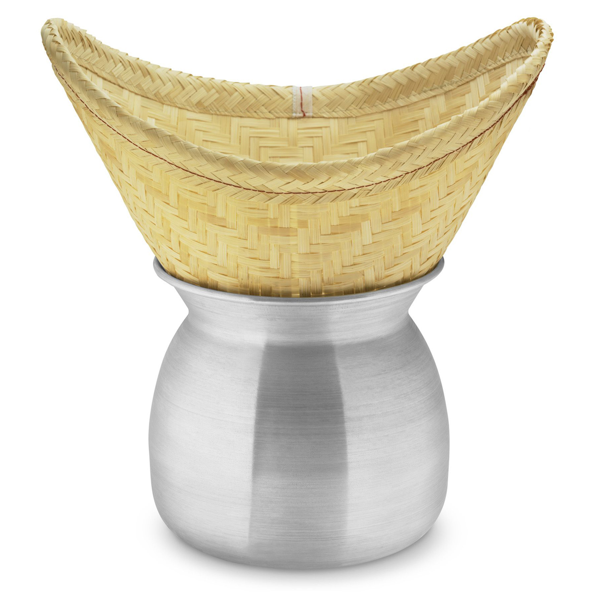
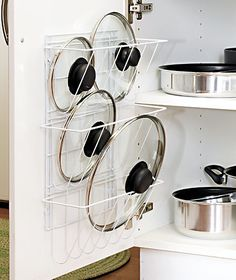
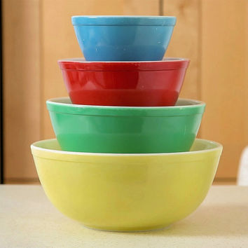
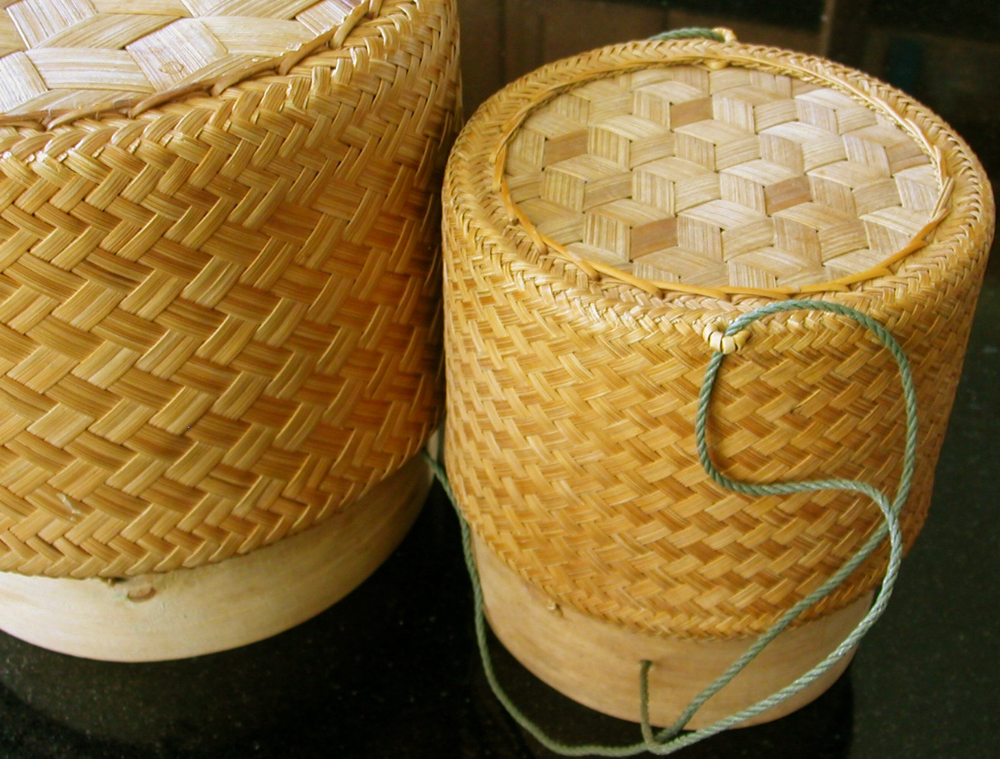

Lao Sticky Rice: What You Need and Where to Find It
What You Need (pics below) :
- Steamer Pot and Bamboo Steamer aka Haut
- Heavy Pot or Pan Lid
- Large Bowl for Soaking
- Bamboo Spoon or Wooden Spoon (no metal spoons please)
- Uncooked Sticky Rice aka Glutinous Rice aka Sweet Rice (one 6 oz cup per serving or person should be sufficient)
- Sticky Rice Holder aka Thip Khao
|  |  |  |
 |
.jpg) |
 |
Where to Find It:
You can find everything listed at your nearest ChinaTown. If you don't have a ChinaTown near you, check out your favorite online sites like Amazon or Etsy or EBay, etc. Just make sure to search "Lao" steaming basket or "Lao" rice basket, etc. It might take a few weeks or longer to get to you though since most items will ship from Thailand.
If you don't have weeks to spare, you can always go to a Lao restaurant in your area. Even an Isaan (aka Isan) restaurant will do the trick. Although Laotian restaurants are rare, most cities around the world have Thai and Vietnamese restaurants and some might even have foods similar to Lao cuisine. But, if you want more authentic Laotian sticky rice and food, the trick is to find a Thai or Vietnamese restaurant that has an Isaan (aka Isan) menu or even a Lao menu that is separate from their regular menu. All you have to do is ask.
When you search online for restaurants or supplies, just be sure to put in the search terms: Lao, Laotian, Isaan or Isan.